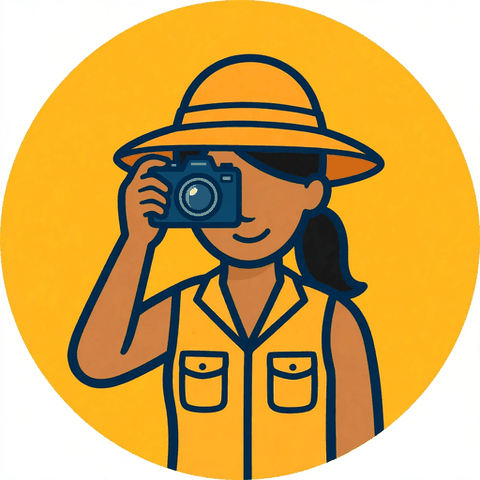

Visit MeridaPopular day trips from Mérida — check live availability and cancellation terms when you book. Booking through the links below supports Visit Merida's free guides at no extra cost to you.
11.5 hours. The classic: wonder of the world, yellow colonial town, cenote swim, buffet lunch.
8 hours. Puuc-route Maya city, a 17th-century henequen hacienda, and a cenote swim — with lunch.
Swim four very different cenotes — open, semi-open, and cave — on one easy half-day trip from Mérida.
3–5.5 hours. Working 19th-century hacienda: mule-drawn rail carts, henequen process, Maya house, cenote Dzul Há.
7.5 hours. Flamingo estuary boat ride, mangroves, and an afternoon on the Gulf beach.
Food tours, cooking classes, night tours, airport transfers — every bookable experience in and around Mérida.
Experience trails and city the smart way: hop on the Turibús double-decker (Northern Circuit + Barrios, audio guide in 9 languages), browse Mérida day tours, or catch an ADO bus.
The same day trips, bookable on Viator — every booking through these links earns Visit Merida an 8% commission at no extra cost to you, keeping the guides free.
4.9★ small-group day trip from Mérida, 11–12 hours: the wonder of the world, a cenote swim, and the yellow town of Izamal.
4.5★ full day: two Puuc-route Maya cities, a cenote swim, and a chocolate museum visit — with lunch.
4.8★ from Mérida: three Homún cenotes by bike or horse-drawn cart, snorkeling gear, lunch, and hotel pickup.
5.0★ day trip: flamingo boat ride through the mangroves, beach time, and a seafood lunch in Celestún.
98% recommended: Santa Bárbara + Hacienda Mucuyché cenotes in one private day from Mérida, admissions included.
Food tours, cooking classes, night tours, and every bookable experience in and around Mérida on Viator.
Our booking partners for tours, transfers, stays and staying connected — links convert automatically to support Visit Merida at no extra cost to you.
Chichén Itzá, cenote swim & buffet lunch from Mérida — 5.0-star rated join-in tour.
Entry tickets to Chichén Itzá — the most-reviewed option, 1,000+ reviews.
"Mérida: Mysteries Unveiled" — self-guided English audio walk, about €10, go at your own pace.
Fixed-price private taxi to/from Mérida airport (MID). Meet-and-greet, no haggling.
Land connected: a Mexico tourist eSIM on your phone from $4, no physical SIM hunt.
Car rental across Mexico — for Chichén Itzá, Uxmal and cenote runs on your own schedule.
Affiliate disclosure: links above are partner links — if you book, Visit Merida may earn a commission at no extra cost to you. Gracias for keeping the guides free. / Enlaces de afiliado: si reservas, Visit Merida puede ganar una comisión sin costo extra para ti. / Divulgation d'affiliation : les liens ci-dessus sont des liens partenaires — si vous réservez, Visit Merida peut percevoir une commission sans frais supplémentaires pour vous.